CICS WS
O objetivo deste documento é mostrar como disponibilizar um programa COBOL para ser consumido pela baixa plataforma, através de web service CICS.
Para disponibilizar um programa COBOL online através de Web Service Cics, siga os passos abaixo:
1) CRIAR PASTAS no z/OS UNIX (JCL)
As seguintes pastas devem ser criadas no z/OS Unix:
/u/webservices/
/u/webservices/
/u/webservices/
/u/webservices/
/u/webservices/
Para criar as pastas, copie o JCL que está em DES.SUD.V00.LIB.SAMPLE(WSCMKDIR), alterar o parâmetro e submeter o job.
Informar o sistema e o nome do pipeline nos parâmetros, em letras minúsculas:
SISTEMA=’sixxx’ => sistema xxx
PIPELINE= ‘xxxspipe’ => nome sugerido para o pipeline soap do sistema xxx
JCL template => DES.SUD.V00.LIB.SAMPLE(WSCMKDIR)
//DESMKDIR JOB (DES,SP,72664,09,30),'XXXWSC',REGION=0M,
// TIME=1440,MSGLEVEL=(1,1),MSGCLASS=T,CLASS=N,NOTIFY=&SYSUID
//*********************************************************************
//* SCRIPT PARA CRIAR AS PASTAS NO Z/OS UNIX PARA USO
//* WEB SERVICE CICS
//*********************************************************************
//PROCLIB JCLLIB ORDER=DES.V01.PROC
//JOBLIB DD DSN=DES.TESTEB.LINKLIB,DISP=SHR
// DD DSN=END.SPD.TQS00.LOAD,DISP=SHR
// DD DSN=END.SPD.HOMOL.LOAD,DISP=SHR
// DD DSN=END.V01.LOAD,DISP=SHR
//*********************************************************************
//* PARAMETROS
//* INFORMAR OS PARAMETROS EM LETRAS MINUSCULAS
//* SISTEMA EM SET SISTEMA='sixxx'
//* PIPELINE EM SET PIPELINE='xxxspipe'
//*********************************************************************
//PARM EXPORT SYMLIST=(SISTEMA,PIPELINE) // SET SISTEMA='sixxx' // SET PIPELINE='xxxspipe'
//*********************************************************************
//* EXECUTA SHELL SCRIPT Z/OS UNIX - CRIACAO DA PASTA DO SISTEMA
//* no path /u/webservices/
//* VISUALIZE AS MENSAGENS DO SCRIPT NA SYSOUT DO JOB - STDOUT MKDIR
//*********************************************************************
//MKDIR EXEC PGM=BPXBATCH,
// PARM='SH /u/webservices/scripts/scmkdir.sh &SISTEMA &PIPELINE'
//STDIN DD DUMMY
//STDOUT DD SYSOUT=*
//STDERR DD SYSOUT=*
//*
Submeta o job. As mensagens geradas pelo script das pastas geradas, pode ser visualizada na SYSOUT: DD STDOUT step MKDIR
Exemplo
JCL exemplo do sistema SISUD => DES.SUD.V00.LIB.SAMPLE(SUDMKDIR)
2) CRIAR BOOK REQUEST E RESPONSE
Obter as seguintes informações do programa ou rotina COBOL, que será disponibilizado com o web service Cics:
- PGMNAME: Nome do programa
- Funcionalidade do programa
- PGMINT: Tipo COMMAREA ou CHANNEL
- Book(s)
Exemplo
PGMNAME: SUDPOT01 => DES.SUD.V00.LIB.SAMPLE(SUDPOT01)
Funcionalidade do programa: testesudpot01
PGMINT: CommonArea
Book: SUDWIT01 => DES.SUD.V00.LIB.SAMPLE(SUDWIT01)
CRIAR BOOKS
Atenção
Os books criados não podem conter:
- Caracteres especiais, exceto - (hífen/traço)
- REDEFINES
- VALUE é ignorado
Programa novo: os books de entrada e saída devem conter apenas os campos necessários.
Programa legado: que utiliza book único, devem ser criados books de entrada e saída com o mesmo tamanho do original. No book de entrada, substituir os campos de saída por FILLER. No book de saída, substituir os campos de entrada por FILLER. Veja exemplo a seguir*.
Programa que usa vários containeres: Deve ser gerado um book para cada container. Isto não será abordado neste tutorial.
Mais informações podem ser obtidas em COBOL to XML schema mapping
Exemplo book legado:
Neste exemplo, os books serão gerados a partir do book legado.
Criar book para cada chamada (entrada e saída).
Retirar os caracteres :, não pode ter REDEFINES, VALUE é ignorado.
Desmembrar este book.
Book original do legado:
*----------------------------------------------------------------*
* SUDWSYYY - BOOK *
*----------------------------------------------------------------*
02 :SUDWSYYY:-AREA.
03 :SUDWSYYY:-ENTRADA.
05 :SUDWSYYY:-NU-CONTA PIC 9(012).
05 :SUDWSYYY:-DT-MOVIMENTO PIC 9(008).
03 :SUDWSYYY:-SAIDA.
05 :SUDWSYYY:-NU-CPF-TITULAR PIC 9(011).
05 :SUDWSYYY:-NU-TIPO-PESSOA PIC 9(001).
05 :SUDWSYYY:-IC-TIPO-CONTA PIC 9(002).
Neste exemplo, foram criados dois books:
Book de entrada (REQMEM):
Os campos da saída foram substituídos por FILLER
Sugestão: renomear o item principal do book como REQUEST e retirar o prefixo do book no nome dos campos
*----------------------------------------------------------------*
* SUDWIYYY - BOOK ENTRADA DESMEMBRADO PARA WEB SERVICE CICS *
*----------------------------------------------------------------*
02 REQUEST.
03 ENTRADA.
05 NU-CONTA PIC 9(012).
05 DT-MOVIMENTO PIC 9(008).
03 FILLER PIC X(014).
BOOK SAÍDA (RESPMEM):
Os campos da entrada foram substituídos por FILLER
Sugestão: renomear o item principal do book como RESPONSE e retirar o prefixo do book no nome dos campos
*----------------------------------------------------------------*
* SUDWIYYY - BOOK ENTRADA DESMEMBRADO PARA WEB SERVICE CICS *
*----------------------------------------------------------------*
02 RESPONSE.
03 FILLER PIC X(020).
03 SAIDA.
05 NU-CPF-TITULAR PIC 9(011).
05 NU-TIPO-PESSOA PIC 9(001).
05 IC-TIPO-CONTA PIC 9(002).
Dica
Para facilitar a contagem das posições, existe a seguinte opção no TSO:
TSOSPDES
G – Produtos
FE - Tool Kit Desenvolvimento
13 - BE Converte BOOK COBOL
3) CRIAR TRANSAÇÃO CICS ASSOCIADA AO DFHPIDSH
Solicitar criação da Transação Cics.
Criar uma nova transação Cics para o webservice, no AOR e outra transação no TOR.
Exemplo:
| Transaction definitions | AOR | TOR | ||
|---|---|---|---|---|
| Name | SUDW | SUDW | ||
| Version | 1 | 2 | ||
| Description | TESTE SISUD WEBSERVICE -AOR- DES-TQS- DFHPIDSH | TESTE SISUD WEBSERVICE -TOR- DES-TQS- DFHPIDSH | ||
| First program name | DFHPIDSH | DFHPIDSH | ||
| Size in bytes of transaction work area (TWA) | ' 0' | ' 0' | ||
| Transaction profile | DFHCICST | DFHCICST | ||
| Default application partition set | ||||
| Enabled status | Enabled | Enabled | ||
| Primed storage allocation | ' 0' | ' 0' | ||
| Task data location | Any | Any | ||
| Task data key | User | User | ||
| Storage clearance status | No | No | ||
| Runaway timeout value | SYSTEM | SYSTEM | ||
| Shutdown run status | Disabled | Disabled | ||
| Transaction isolation option | No | No | ||
| Bridge exit name | ||||
| Remote attributes | ||||
| Dynamic routing option | No | Yes | ||
| Dynamic routing status | No | Yes | ||
| Remote system name | ||||
| Remote transaction name | SUDW | |||
| Transaction routing profile | DFHCICSS | DFHCICSS | ||
| Queueing on local system | N_a | N_a | ||
| Scheduling | ||||
| Transaction priority | ' 1' | ' 1' | ||
| Transaction class number | NO | NO | ||
| Transaction class name | DFHCLASS | DFHCLASS | ||
| Aliases | ||||
| Alias name for transaction | ||||
| Transaction initiation | ||||
| Alternate name (in hex) for initiating transaction | ||||
| APPC partner transaction name | ||||
| Alternate partner transaction name (in hex) | ||||
| Recovery | ||||
| Deadlock timeout value | NO | NO | ||
| Transaction restart facility | No | No | ||
| System purgeable option | No | No | ||
| Purgeable for terminal error option | No | No | ||
| Transaction dump option | Yes | Yes | ||
| Trace transaction activity option | Yes | Yes | ||
| Suppress user data in trace entries | No | No | ||
| Object transaction service (OTS) timeout (HHMMSS) | NO | NO | ||
| Indoubt attributes | ||||
| CICS failure action | Backout | Backout | ||
| In-doubt wait option | Yes | Yes | ||
| In-doubt wait time (days) | ' 0' | ' 0' | ||
| In-doubt wait time (hours) | ' 0' | ' 0' | ||
| In-doubt wait time (minutes) | ' 0' | ' 0' | ||
| In-doubt failure processing action | Backout | Backout | ||
| Security | ||||
| Resource security checking | No | No | ||
| Command level security option | No | No | ||
| External security manager option | N_a | N_a | ||
| Transaction security value | ' 1' | ' 1' | ||
| Resource security value | ' 0' | ' 0' | ||
| INSTALAR | ||||
| Resource group | GRADES GRATQS | GRTDES GRTQS |
4) CRIAR PIPELINE
Caso ainda não exista, a criação do Pipeline deve ser solicitada para a equipe de suporte
Informar:
Nome do pipeline, path e arquivo do config, path do shelf, path do wsbind que foram gerados no item 1
Será incluído e instalado no grupo CICS WEB DESENVOLVIMENTO:
DES – GROUP GRCODWB
TQS – GROUP GRCQWAOR
Exemplo de criação e instalação de PIPELINE, através da ferramenta CMAS (somente equipe suporte tem acesso):
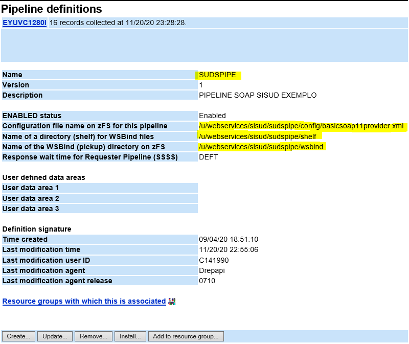
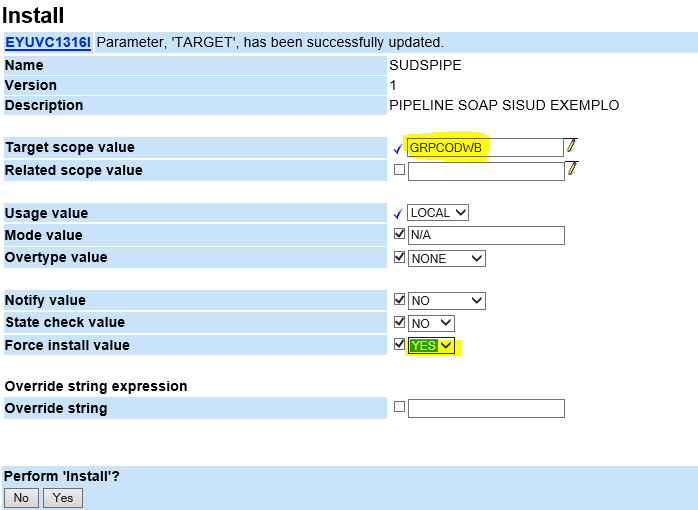
5) CRIAR E EXECUTAR JCL DFHLS2WS
DFHLS2WS é um programa utilitário do CICS que gera os reursos URIMAP, WEBSERVICE (wsbind, wsdl), conforme parâmetros informados.
DFHWS2LS: LS = Language Structure (Cobol), 2 = To, WS = WSDL
5.1) Criar o JCL DFHLS2WS
Copiar o JCL que está em DES.SUD.V00.LIB.SAMPLE(WSCLS2WS) e alterar os parâmetros. job.
Exemplo: DES.SUD.V00.LIB.SAMPLE(SUDLST01)
//DESLST01 JOB (DES,SP,72664,09,30),'SUDWSC',REGION=0M,
// TIME=1440,MSGLEVEL=(1,1),MSGCLASS=T,CLASS=N,NOTIFY=&SYSUID
//PROCLIB JCLLIB ORDER=DES.V01.PROC //LS2WS EXEC DFHLS2WS,TMPDIR='/u/webservices/sisud/sudspipe/tmp',
// TMPFILE='LS2WS'
//INPUT.SYSUT1 DD *
#---------------------------------------------------------------------#
# ENTRADA #
#---------------------------------------------------------------------#
#
MAPPING-LEVEL=4.3
MINIMUM-RUNTIME-LEVEL=CURRENT
# --> biblioteca de books
PDSLIB=//END.SPD.TESTE.BOOK
# --> books de entrada e saida REQMEM=SUDWIT01
RESPMEM=SUDWOT01
# --> tipo de interface
PGMINT=COMMAREA
# --> programa
LANG=COBOL PGMNAME=SUDPOT01
# --> transacao TRANSACTION=SUDW
# --> atributos do Web Service SOAP
REQUEST-NAMESPACE=* https://caixa.gov.br/sisud/testesudpot01/req
RESPONSE-NAMESPACE=* https://caixa.gov.br/sisud/testesudpot01/resp URI=/sisud/testesudpot01 OPERATION-NAME=testesudpot01 WSDL-NAMESPACE=https://caixa.gov.br/sisud/testesudpot01
SOAPVER=1.1
# --> encoding do WSDL
WSDLCP=UTF-8
# --> omitir espacos em branco nas strings de saida do XML de resposta
CHAR-VARYING=COLLAPSE
# --> executar syncpoint
SYNCONRETURN=YES
#---------------------------------------------------------------------#
# SAIDA (WSDL E BIND) #
#---------------------------------------------------------------------#
# WSBIND=/u/webservices/sisud/sudspipe/wsbind/testesudpot01.wsbind WSDL=/u/webservices/sisud/sudspipe/wsbind/testesudpot01.wsdl LOGFILE=/u/webservices/sisud/sudspipe/wslog/testesudpot01.log
#---------------------------------------------------------------------#
# DICAS: #
# - INSTALACAO DO WEBSERVICE: #
# O PIPELINE deve estar criado #
# O WEBSERVICE sera instalado qdo o CICS inicializar no dia seguinte #
# Se desejar instalar antes disso, sera preciso entrar nos CICS #
# (CICDAWB1, CICDTWB1, CICDAWB2, CICDTWB2) e executar o comando #
# CEMT PERFORM PIPE(sudspipe) SCAN #
# #
# - CONSULTAR WEBSERVICE NO CICS: #
# executar o comando CEMT I WEBS PIPE(sudspipe) #
# #
# - CONSULTAR O WSDL NO BROWSER (CHROME ou FIREFOX), digitando #
# https://cicsweb.des.caixa:32587/sisud/testesudpot01/?wsdl #
# informe usuário e senha #
# #
# - TESTAR ACESSANDO SERVICO NA FERRAMENTA SOAPUI: #
# Em Initial WSDL, informar #
# https://cicsweb.des.caixa:32587/sisud/testesudpot01?wsdl #
# depois alterar my-server:my-port por cicsweb.des.caixa:32587 #
# usar Basic authentication, informando usuário e senha #
#---------------------------------------------------------------------#
5.2) Executar o JCL DFHLS2WS
Submeter o job
O resultado é exibido na sysout do job e também é gravado no arquivo .log na pasta u/webservices/sixxx/xxxspipe/wslog/
Obs.: Se ocorrer o seguinte erro FSUM1004 Cannot change to directory . Onde C112233 é sua matrícula, significa que o usuário ainda não tem pasta criada no z/OS Unix
Executar o script de criação da pasta do usuário através do seguinte JCL:
//DESLS2WS JOB (DES,SP,72664,09,30),'D02WSC',REGION=0M,
// TIME=1440,MSGLEVEL=(1,1),MSGCLASS=T,CLASS=N,NOTIFY=&SYSUID
//PROCLIB JCLLIB ORDER=DES.V01.PROC
//*
//*-------------------------------------------------------------------*
//* WEB SERVICE CICS *
//*-------------------------------------------------------------------*
//*
//*********************************************************************
//* CRIAR PASTA DO USUARIO NO Z/OS UNIX *
//*-------------------------------------------------------------------*
//* O seguinte erro acontece quando não existir a pasta do usuário *
//* FSUM1004 Cannot change to directory </U/C123456>. *
//* No step PARMUSER, substituir o usuario 'c123456' *
//*-------------------------------------------------------------------*
//PARMUSER EXPORT SYMLIST=(USUARIO)
// SET USUARIO='c123456'
//*-------------------------------------------------------------------*
//MKUSER EXEC PGM=BPXBATCH,
// PARM='SH /u/webservices/scripts/scmkuser.sh &USUARIO'
//STDIN DD DUMMY
//STDOUT DD SYSOUT=*
//STDERR DD SYSOUT=*
//*
6) INSTALAR WEBSERVICE
A instalação do WEBSERVICE é feita automaticamente na reciclagem do CICS, que ocorre uma vez ao dia. Neste caso é necessário aguardar até o dia seguinte.
Caso deseje instalar antes disso, então acesse o CICS e execute o seguinte comando:
CEMT PERFORM PIPE(
Exemplo:
Entrar nos CICS de desenvolvimento CICDAWB1, CICDTWB1, CICDAWB2, CICDTWB2 e executar CEMT PERFORM PIPE(SUDSPIPE) SCAN
Resultando em:
PERFORM PIPE(SUDSPIPE) SCAN
STATUS: RESULTS
Pip(SUDSPIPE) Sca
SYSID=AWB1 APPLID=CICDAWB1
RESPONSE: NORMAL TIME: 23.55.12 DATE: 20/11/20
PF 1 HELP 3 END 5 VAR 7 SBH 8 SFH 9 MSG 10 SB 11 SF SF
Obs.: Para verificar se o WEBSERVICE foi instalado, execute o seguinte commando:
CEMT I WEBS PIPE(SUDSPIPE)
Resultando em:
I WEBS PIPE(SUDSPIPE)
STATUS: RESULTS - OVERTYPE TO MODIFY
Webs(testesudpot01 ) Pip(SUDSPIPE)
Ins Ccs(00000) Uri($353550 ) Pro(SUDPOT01) Com Xopsup Xopdir
I WEBS PIPE(SUDSPIPE)
RESULT - OVERTYPE TO MODIFY
Webservice(testesudpot01)
Pipeline(SUDSPIPE)
Validationst( Novalidation )
State(Inservice)
Ccsid(00000)
Urimap($353550)
Program(SUDPOT01)
Pgminterface(Commarea)
Xopsupportst(Xopsupport)
Xopdirectst(Xopdirect)
Mappinglevel(4.3)
Minrunlevel(4.3)
Datestamp(20201120)
Timestamp(23:53:55)
Container()
Wsdlfile(/u/webservices/sisud/sudspipe/wsbind/testesudpot01.wsdl)
Archivefile()
+ Wsbind(/u/webservices/sisud/sudspipe/wsbind/testesudpot01.wsbind)
SYSID=AWB1 APPLID=CICDAWB1
TIME: 23.56.57 DATE: 20/11/20
7) TESTAR WSDL
No navegador web (Mozilla Firefox ou Chrome), digite a url do serviço criado, seguida de ?wsdl
https://cicsweb.des.caixa:32587/sisud/testesudpot01?wsdl
informe seu usuário e senha da rede
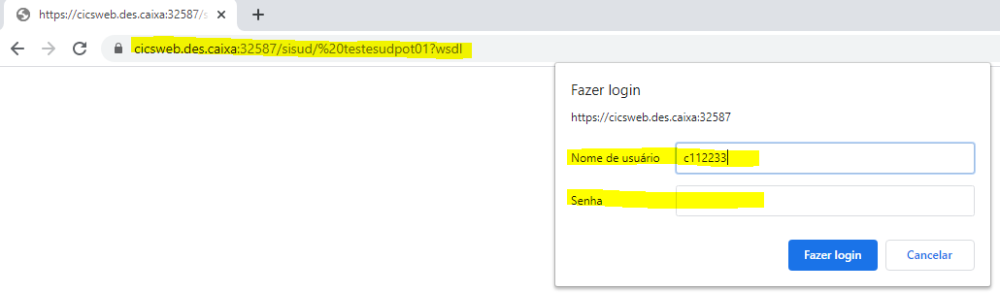
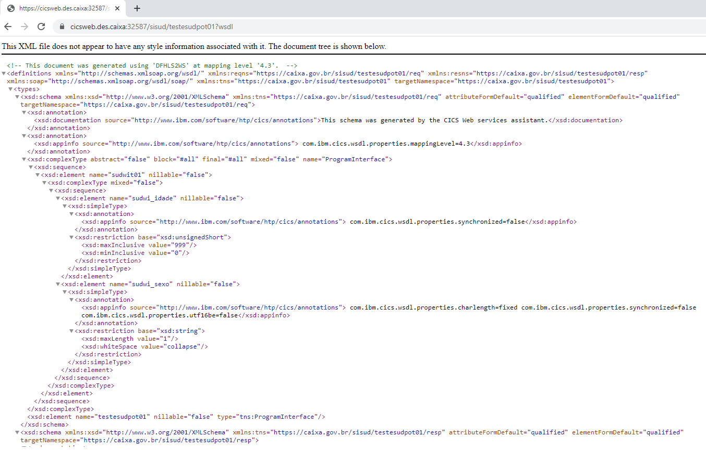
8) TESTAR WEBSERVICE NO SOAPUI
Na ferramenta SOAPUI
Clique em SOAP
Na janela New SOAP Project:
Project Name: informe o nome do projeto
Initial WSDL: informe a url do wsdl serviço criado
https://cicsweb.des.caixa:32587/sisud/testesudpot01?wsdl
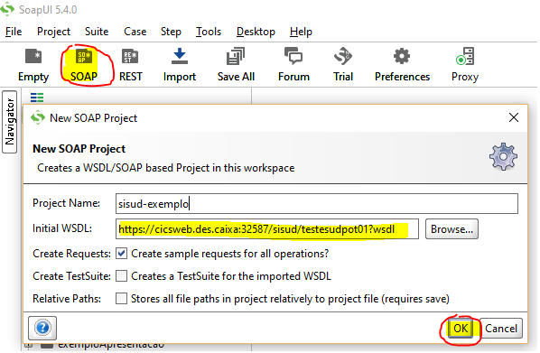
Se aparecer a janela Basic Authentication, informe seu usuário e senha da rede
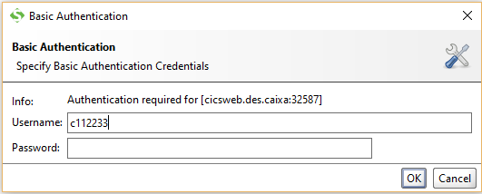
Na pasta do projeto, clicar em Request 1
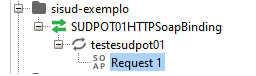
Na janela Request, alterar http://my-server:my-port por https://cicsweb.des.caixa:32587
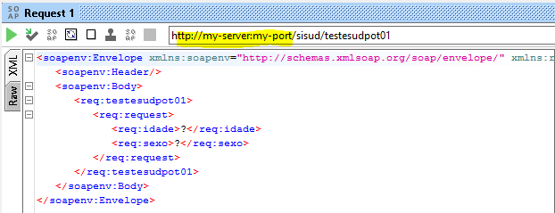
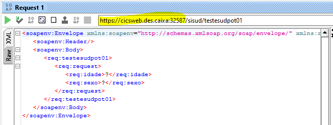
Inserir os dados de entrada (em >?<)
Clicar no botão de Submeter (triangulo verde)
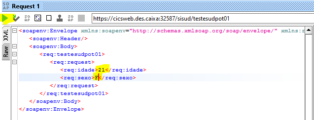
Após submeter, os dados de response (dados de saída), serão apresentados mas…
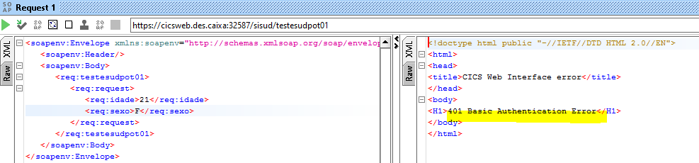
Caso a resposta seja 401 Basic Authentication Basic, clicar em Auth …
Em Authorization, escolher Add New Authorization … Na janela Add Authorization, em Type escolher Basic ...
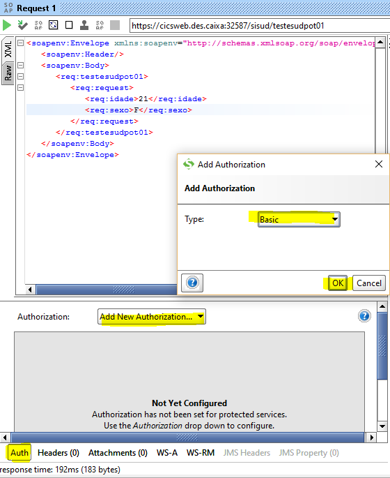
Informe seu usuário e senha da rede e depois clique no triangulo verde para executar
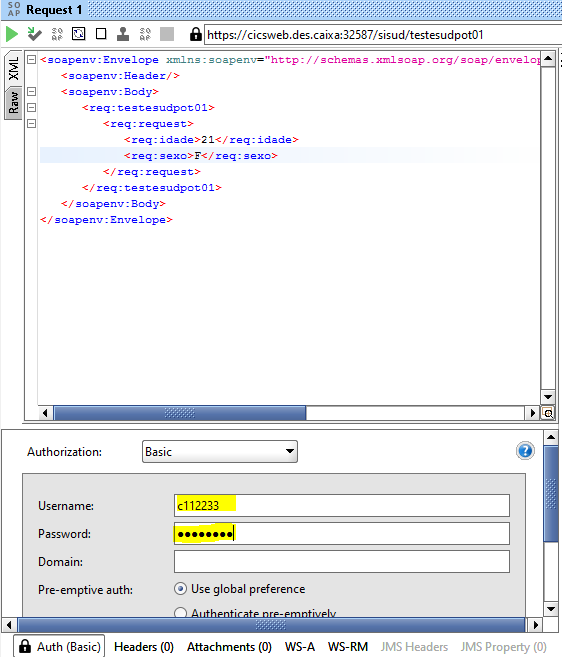
Atenção: Lembre-se de alterar a senha no SOAPUI quando a senha de rede for alterada.
Finalmente, a resposta do web service é mostrada !
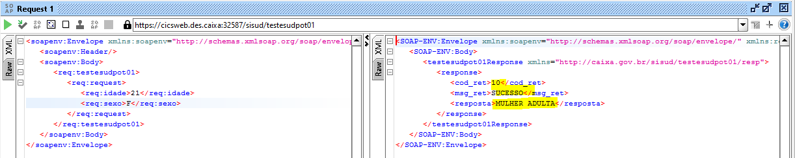
9) PLATAFORMA DISTRIBUÍDA JAVA
Gere o web service client, importando o wsdl através do wsimport. Serão geradas as seguintes classes
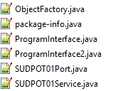
Se necessitar expor como API RESTFUL, gerar web service REST e expor no API Manager.
10) USUÁRIO DE SERVIÇO
O usuário de serviço do sistema deve ser configurado no servidor Jboss.
Para testes unitários na máquina do desenvolvedor Java, pode ser utilizado Basic Authentication, usuário e senha da rede.
11) INFRA
Mainframe: Cics
Plataforma Distribuída: Java, Jboss
MATERIAL DE REFERÊNCIA
Creating a SOAP web service
DFHLS2WS: high-level language to WSDL conversion
Criação de usuário de serviço:
TE191 - USUÁRIO DE SERVIÇO -PADRÕES PARA CRIAÇÃO, GERENCIAMENTO E USO
Histórico da Revisão
| Data | Versão | Descrição | Autor |
|---|---|---|---|
| 23/11/2020 | 1.0 | Criação do tutorial | SUART02 |
| 05/03/2021 | 2.0 | Substituir DES.SUD.V00.LIB.SAMPLE por DES.SUD.V00.LIB.SAMPLE, acerto books e soapui, inclusão itens 10,11,12 | SUART02 |
| 25/10/2023 | 2.1 | Revisão do tutorial | SUART02 |